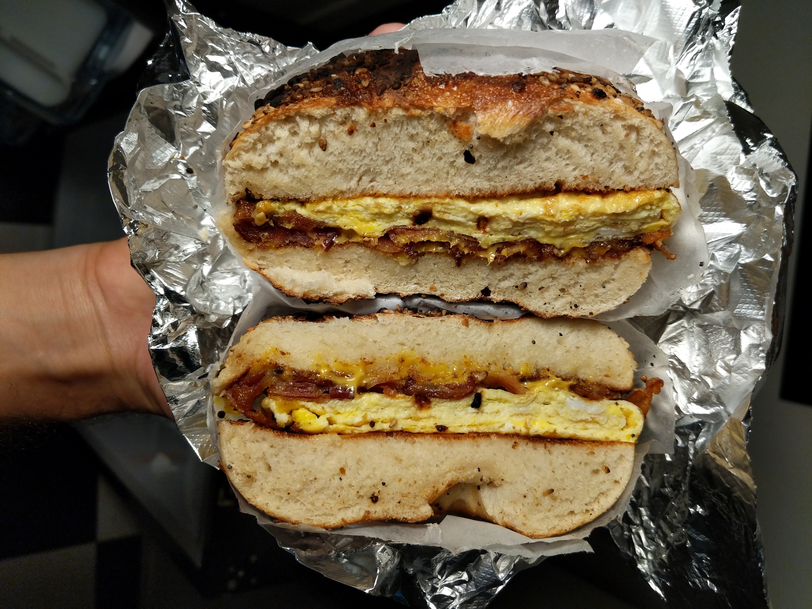

Bacon, Egg, & Cheese Bagel Recipe
Description
Ingredients
- 1 Everything bagel sliced in half
- 2 eggs
- 1 slice of Cheddar cheese
- 2 strips of bacon
- A pinch of salt
Directions
- Take both sides of the bagel and lightly toast them.
- Lay the strips of bacon in a pan on low to medium heat and cook until desired. Then, using a paper towel, wipe some of the fat out of the pan leaving enough for the eggs to cook and set back on the stove on low heat.
- Crack the eggs into a bowl and season with salt. Now scramble them with a whisk or fork.
- Now pour the eggs into the pan and cook on one side until done, then flip and cook on the other.
- While the eggs are cooking, take the slice of cheese and lay it on one slice of the bagel. Then, cut the strips of bacon in half and place on top of the cheese in a crosshatching position.
- Once the eggs are done cooking, fold the eggs in half into a half moon shape. Then, cut the eggs in half starting from the circle-shaped side across to the flat side.
- Lay one piece of the eggs on top of the bacon, then the other piece on top of that.
- Place the other slice of bagel on top of the sandwich and cut in half.
- Serve.